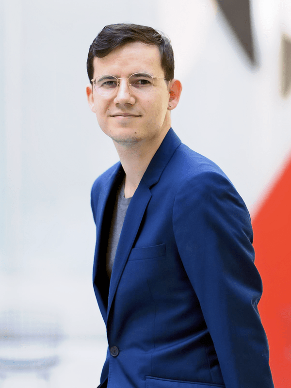

I’m a Ph.D. Candidate in the art history program at the CUNY Graduate Center and a Joan Tisch Teaching Fellow at the Whitney Museum of American Art. My research interests have centered on expressionism in Europe and the United States; German visual culture more broadly; the relationships between art and labor; primitivism and colonialism; drawings and prints; queer visual culture; performance; and historiography. My dissertation, “Spiritualized Machines: Die Brücke, Expressionism, and Wilhelmine Modernity,” argues for the structuring prominence of the machine and industrial production for German Expressionism, in particular the art of the artist group known as Die Brücke (The Bridge). Focusing on their background in design and architecture, I see expressionism as mediating a new German subject informed by both the country’s accelerated capitalism and a primitivizing emphasis on affect and feeling. The formal and political questions posed by this movement, I argue, anticipate contemporary dynamics of work, affective labor, and burnout.
I’ve participated in the Whitney Independent Study Program, acted as Scholar-in-Residence at the Robert Gore Rifkind Center for German Expressionist Studies at the Los Angeles County Museum of Art, and most recently, worked at the Museum of Modern Art as a Mellon-Marron Museum Research Consortium Fellow in the Department of Drawings and Prints. From 2019-20, I researched in Germany with the support of the Deutscher Akademsicher Austausch Dienst (DAAD) and the Brücke-Museum Berlin. My writing on contemporary art has appeared in publications like Artforum, Art in America, Frieze, Texte zur Kunst, and several exhibition catalogues. Starting Fall 2022, I’ll be an inaugural Diamonstein-Spielvogel Fellow at the Metropolitan Museum of Art in the Department of Drawings and Prints. You can find my writing, talks, and course syllabi at the menu on the left.
I can be emailed at jhenry@gradcenter.cuny.edu. I’d be happy to share any texts or lecture slides otherwise not available here.